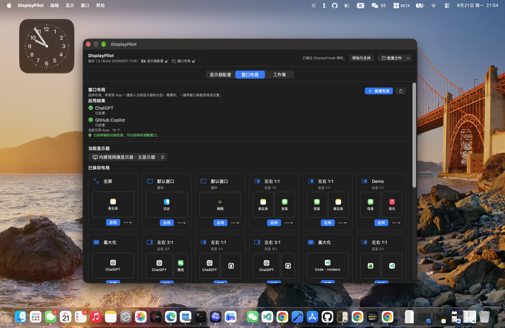
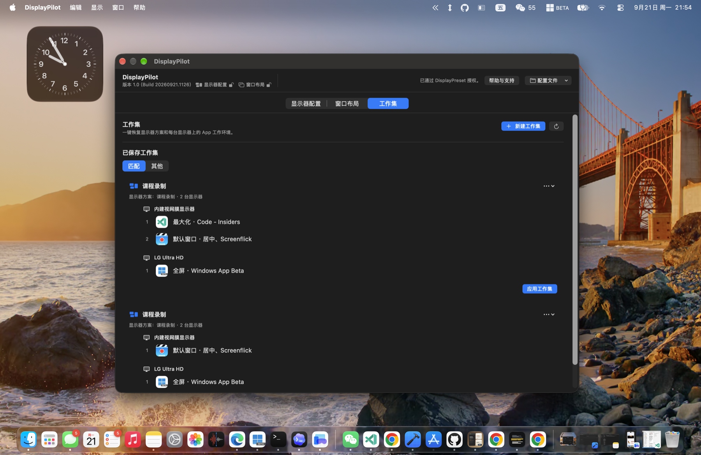
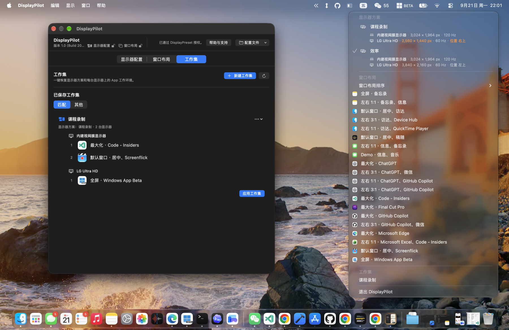

⊞
窗口智能归位
告别手动拖拽缩放。捕获所有正在运行的 App 窗口坐标与尺寸，无论多乱，一键对齐归位。
插拔外接显示器、切换任务时，窗口不再散乱。DisplayPilot 助你一键记住并恢复各屏多应用的理想布局与工作环境，秒级进入专注心流。
DisplayPilot 需要 macOS 辅助功能（Accessibility）权限调整窗口，并读取同一台 Mac 上的 DisplayPreset 授权完成解锁。
告别手动拖拽缩放。捕获所有正在运行的 App 窗口坐标与尺寸，无论多乱，一键对齐归位。
为编程、写作、设计或视频会议量身定制应用组合与布局，快速在不同工作模式间无缝切换。
常驻菜单栏，右键轻点即可秒级切换显示器方案、布局或工作集，彻底摆脱繁琐主窗口打扰。
纯本地运行，无需登录账号，无数据上传服务器；直接基于本地 DisplayPreset 授权安全解锁。



DisplayPreset 和 DisplayPilot 分工清晰、互为补充，我们严格遵守 Apple App Store 规则与 macOS 安全沙盒规范。
DisplayPreset 上架于 Mac App Store，受标准沙盒保护，专注于硬件多显示器拓扑配置的保存与恢复，并通过 Apple 官方渠道处理安全购买；DisplayPilot 则需要辅助功能（Accessibility）权限来实现更深度的第三方窗口定位与桌面工作集编排。通过本地 App Group 共享 Apple 签名凭据，你无需重复付费即可享受双重能力。